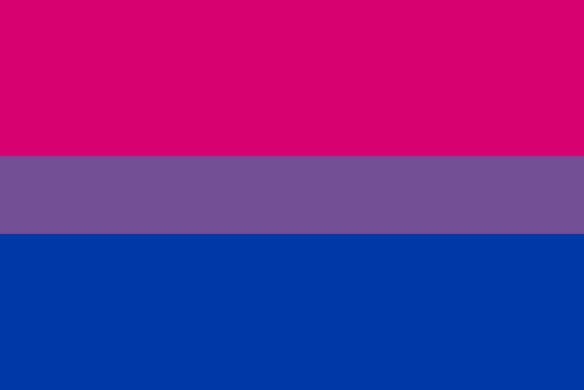
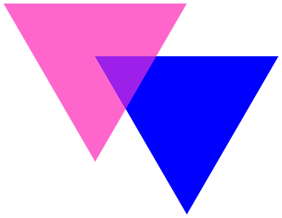
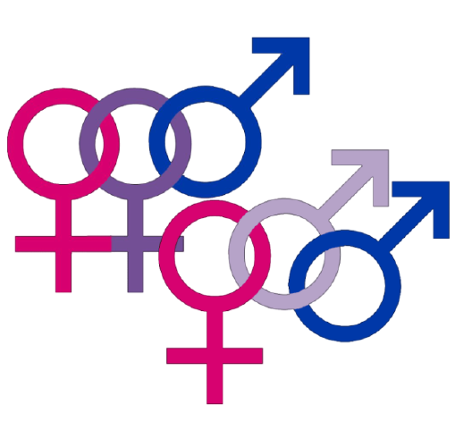
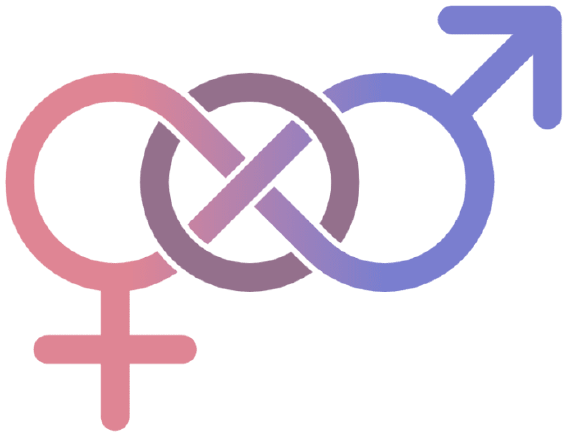
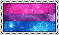
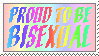
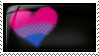
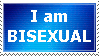

Welcome to Dewside
Bisexuality
Bisexuality is the capability of attraction to both sexes, or, in other words, all people. Bisexual people may have prefrences or a solid lack thereof, but either way are still bisexual. Bisexuality is not "half gay, half straight", but instead, a single, whole orientation seperate from either.
Symbols of Bisexuality
The Bisexual Pride Flag

Now, contrary to a certain popular misconception, the colors on the bi flag are not "pink for girls" and "blue for boys"! How backwards and stereotypical that would be.
The meaning of our colors is actually a lot more beautiful than that: blue, for opposite sex attraction; pink, for same sex attraction; and a smaller stripe of purple, the color that comes from blending blue and pink, represents the area in-between those two attractions.
This flag was created in 1998 by Michael Page.
The Biangles

The Biangles, the inspiration for the bi flag, were originally created for the Boston Bi Woman's Community. The meaning here is the same.
Note:
The pink triangle can be a sensitive subject, since it is a reclaimed Nazi symbol used to brand homosexual (and openly bisexual) men. Black triangles, the symbol used to denote an "asocial" person (lesbians fell under this category), has not been reclaimed and should not be used.
The Double Moon
The double moon was created in 1998 as an alternative to the Biangles for those uncomfortable with the history of triangle imagery. This symbol sees the most common use in Germany.
Other Symbols


These symbols are plays on the male and female symbols.
Bisexual-Specific Terms
Bisexual erasure- Bisexual erasure is the phenomenon of bisexual individuals being "invisible".
Bisexuals don't stand out clearly- someone in any sort of relationship could be bi, yet the relationship will be refered to as a "lesbian couple" or a "straight couple". When talking about crushes or partners, it isn't obvious that bi people are bi. This is an issue because it alienates bisexuals. It's hard to find people who are like you (no one tends to go around wearing a shirt that says "HELLO I AM BISEXUAL"), which can make you feel like an outsider to any group you're in.
Bisexual erasure can also occur when people dismiss a historical figure or character's bisexuality and instead label them as gay or straight.
Bisexual visibility is important because bisexual people (especially young bisexuals) need to know there are other bi people like them out there. Bi people who have preferences like their's, have similar hobbies, or have grown up to live good lives. Bi visibility lets other bisexual people know that it's good to be bi.
Hit the buttons to progress.
   
Please do NOT call me q///r.